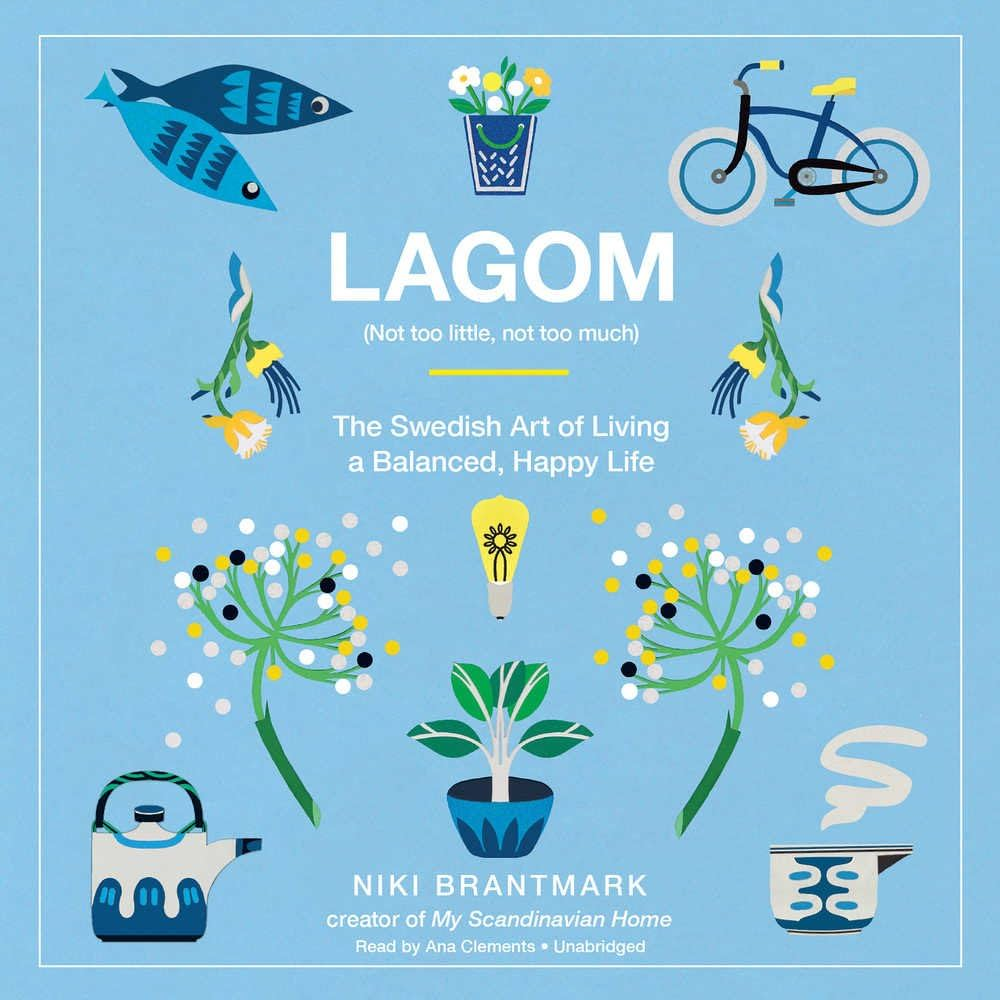
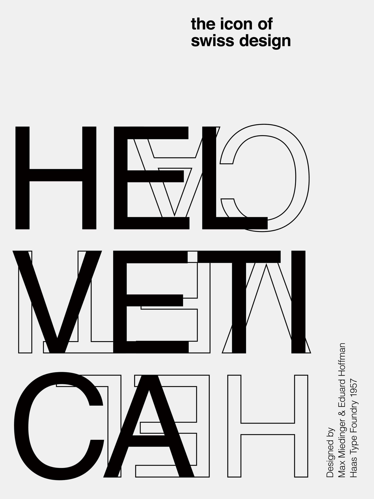
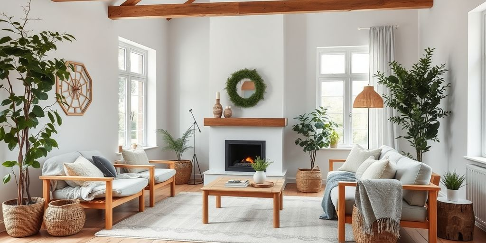

About Nordic Minimalism
What Is Nordic Minimalism?
Nordic Minimalism, also known as Scandinavian Design, is a humanized evolution of Swiss modernism that emerged in the 1950s across Denmark, Sweden, Norway, Finland, and Iceland. Unlike cold, austere minimalism, Nordic design embraces warmth, accessibility, and connection to nature.
It represents a philosophy that less is more—but with soul. Every element serves a purpose, materials are honest, and the overall aesthetic breathes calm and invites people in rather than pushing them away.

The Philosophy: Lagom
At the heart of Nordic design lies lagom, a Swedish word meaning “not too much, not too little, just right.” This principle guides every design decision—from spacing and color to typography and whitespace. It’s a balance between restraint and warmth, minimalism and humanity.
Color Palette
Nordic Minimalism favors natural, muted tones inspired by Scandinavian landscapes: sage greens, warm taupes, soft grays, and off-whites. These colors reflect long winters, forests, and natural materials. Accents are restrained—when color appears, it’s intentional and calming, never jarring.
Typography
Nordic design uses humanist sans-serifs that feel approachable rather than clinical. Generous line-height and letter-spacing create breathing room, making text feel spacious and calm. Typography is about readability and rhythm, not decoration.
Connection to Nature
Nordic design is rooted in the natural world. Materials are organic—wood, wool, leather, natural fabrics. Forms echo nature: soft curves, natural edges, honest materials. The long Scandinavian winters inspired a design philosophy that maximizes light, space, and comfort. Designers sought to bring warmth and human connection into everyday objects and environments.
Evolution from Swiss Design
While Swiss design (1950s–60s) emphasized geometric precision, grid systems, and functional clarity, Nordic design took those principles and added warmth, humanity, and cultural identity. Where Swiss design was international and austere, Nordic design was regional and inviting.
Swiss modernism provided the foundation—the grid, the sans-serif, the restraint. But Nordic designers softened these tools, adding subtle curves, natural materials, and a focus on how objects and spaces made people feel, not just how they functioned.
Today’s Nordic Influence
Nordic design principles continue to shape contemporary digital and physical spaces. Companies like Spotify, IKEA, and Muji embody Nordic values: simplicity, accessibility, sustainability, and human-centered design. The philosophy has become a global aesthetic, influencing everything from web design to interior spaces.